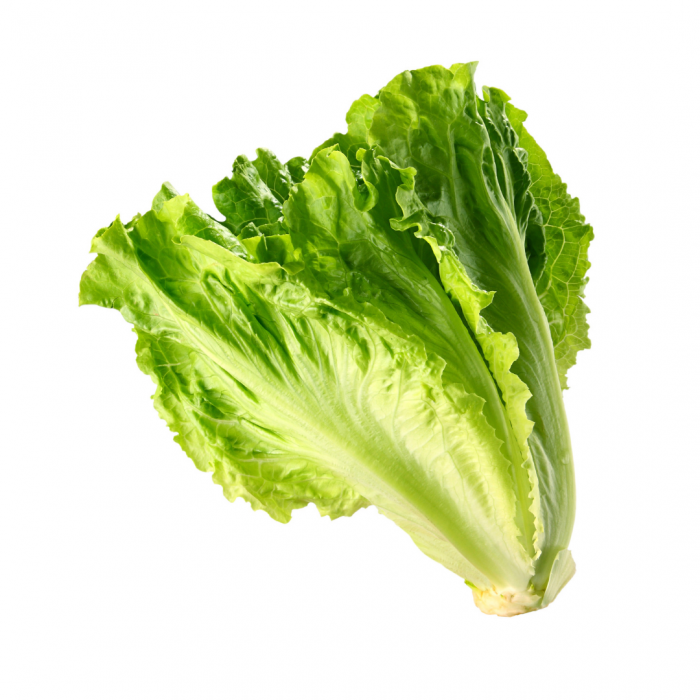

Laitue
Lactuca sativa
Catégorie : Feuilles comestibles
Exposition : Mi-ombre à soleil partiel
Origine : Europe
Saison : Printemps
Besoins en eau : Moyen
Difficulté : Facile
Temps de pousse : 6 semaines
Arrosage : 2 fois/semaine
Culture : les deux
Comestible : Oui
Conseils
Semez toutes les 2-3 semaines pour des récoltes continues.
